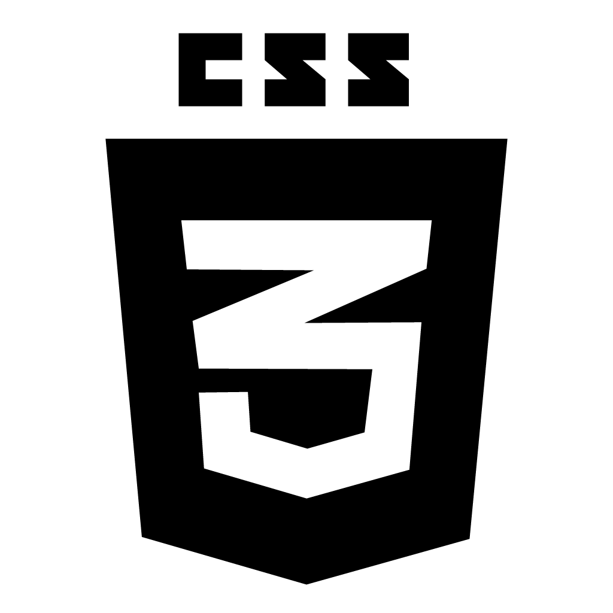

Sobre
Versão Turtle 1.0.1 Beta Tester
Projeto criado inicialmente com a utilização de linguagem de marcação HTML 5 e CSS 3 criado por Ramon Guilherme e hospedado em GIT HUB pages
Tecnologias Usadas
